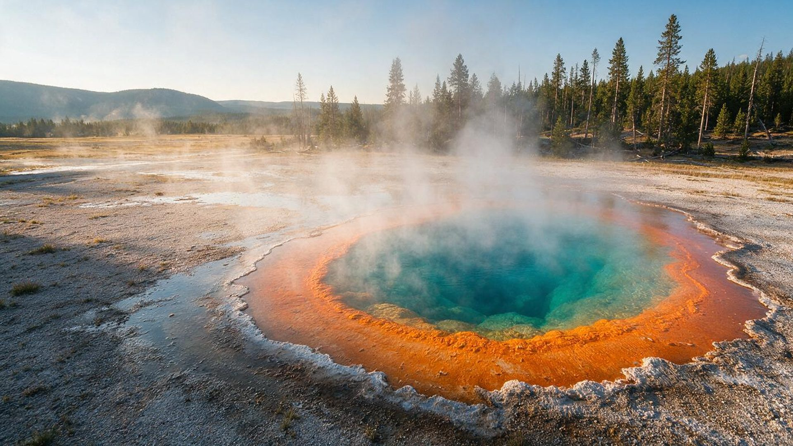
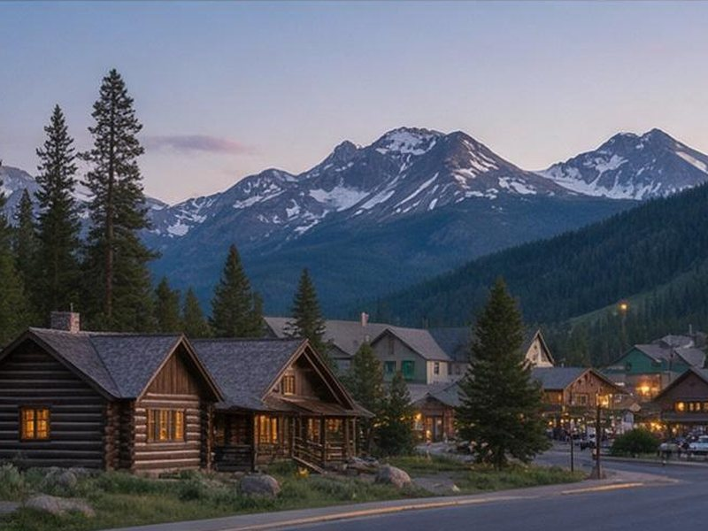

Old Faithful
The famous geyser and the Upper Geyser Basin, with boardwalks past dozens more.

An independent guide to geysers, canyons, wildlife, and the long drives between them, with free trip planning help.
Yellowstone is wild and enormous. These basics keep you safe and keep your days realistic.
Bison, elk, bears, and wolves share the roads and trails. Stay 100 yards from bears and wolves and 25 yards from everything else, and never feed or approach any animal.
Many hot springs are near boiling and some pools are acidic. Walk only on boardwalks and marked trails, and keep children and pets close.
Park roads are slow and sights are far apart. Driving between major areas can take an hour or more, so choose a base that fits what you want to see.
Most visits combine two or three of these.
The famous geyser and the Upper Geyser Basin, with boardwalks past dozens more.

The largest hot spring in the United States, ringed with bands of color.

Golden canyon walls and two waterfalls, including the 308-foot Lower Falls.

Open grassland known for bison, wolves, and bears, best at dawn and dusk.

Travertine terraces in the north, near the park's only year-round road.

A huge, cold mountain lake with shoreline walks, geyser basins, and boat tours.

Share your dates, group size, and what you want to see. Your request is reviewed and, where it helps, shared with local lodging and tour providers who can reply to you.
Request trip helpDistances are large and speed limits are low. Two days covers the highlights near Old Faithful and the Grand Canyon of the Yellowstone. Three to four days lets you add Lamar Valley, Mammoth Hot Springs, and a hike. Plan on a lot of time in the car.
The park has five entrances: West (West Yellowstone, Montana), North (Gardiner, Montana), Northeast (Cooke City, Montana), East (near Cody, Wyoming), and South (from Grand Teton National Park). Your choice depends on what you want to see first and where you are traveling from. The North to Northeast road is the only one open to cars all year.
No. Park rules require at least 100 yards from bears and wolves and at least 25 yards from all other wildlife, including bison and elk. Use a long lens or binoculars. Bison are unpredictable and injure visitors every year.
Most park roads close to regular vehicles in late fall and reopen in spring, but the park stays open. Winter visitors reach Old Faithful and other areas by guided snowcoach or snowmobile. Check road dates on the park's website, because they change each year.